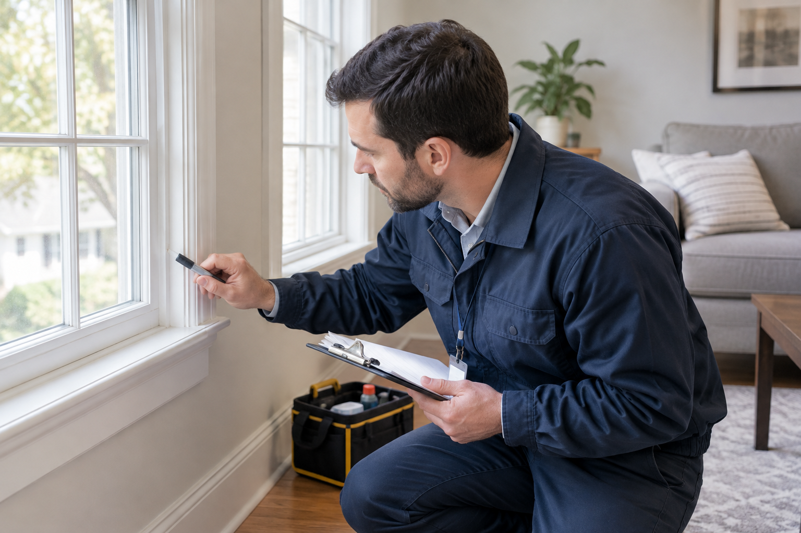

Visual Inspection
A comprehensive visual assessment of your property's condition including painted surfaces and areas subject to impact, friction and deterioration.
YOUR LOCAL Accredited Lead Testing Inspectors
Looking for professional lead paint inspection and testing services in Maryland? 1 Affable Group provides dependable visual assessments, lead dust sampling, and laboratory testing services for homeowners, landlords, property managers and property professionals throughout Maryland. From your first call to the end of the job, we've got you covered.
✓ Professional Services ✓ Affordable pricing ✓ Fast turnaround times

WHAT WE DO
Dependable lead inspection services, careful sample collection and laboratory coordination to help you understand the conditions of your property.
A comprehensive visual assessment of your property's condition including painted surfaces and areas subject to impact, friction and deterioration.
Required amount of samples are collected per State guidelines, then submitted to an accredited laboratory for analysis.
Collected samples are submitted to an accredited laboratory for analysis. Results can be available as soon as the next business day, including Saturdays, depending on laboratory availability.
We understand that time matters. Depending o the service and laboratory processing, many projects may be completed within 24-48 hours...from start to finish.
WHY CHOOSE US
Homeowners Understand potential lead risks before renovations, repairs or family occupancy decision.
Landlords and Property Managers Support tenant safety and property compliance with documented, accredited inspection results.
Real Estate ProfessionalsGet assistance with property-related lead inspection and testing needs.
We believe great service starts with listening, showing up ready to help and explaining all the areas that will be tested. We work efficiently and treat your home with care.
LET'S GET IT INSPECTED
Get in touch today and we'll schedule an inspection as soon as tomorrow.
Business: 1 Affable Group
Telephone 240-400-2500
Email TDavisagent@aol.com
Service Area: Serving Maryland Capital, Central, Western and Southern Regions